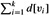

|
|
< Day Day Up > |
|
The Bellman-Ford algorithm solves the single-source shortest-paths problem in the general case in which edge weights may be negative. Given a weighted, directed graph G = (V, E) with source s and weight function w : E → R, the Bellman-Ford algorithm returns a boolean value indicating whether or not there is a negative-weight cycle that is reachable from the source. If there is such a cycle, the algorithm indicates that no solution exists. If there is no such cycle, the algorithm produces the shortest paths and their weights.
The algorithm uses relaxation, progressively decreasing an estimate d[v] on the weight of a shortest path from the source s to each vertex v ∈ V until it achieves the actual shortest-path weight δ(s, v). The algorithm returns TRUE if and only if the graph contains no negative-weight cycles that are reachable from the source.
BELLMAN-FORD(G, w, s) 1 INITIALIZE-SINGLE-SOURCE(G, s) 2 for i ← 1 to |V[G]| - 1 3 do for each edge (u, v) ∈ E[G] 4 do RELAX(u, v, w) 5 for each edge (u, v) ∈ E[G] 6 do if d[v] > d[u] + w(u, v) 7 then return FALSE 8 return TRUE
Figure 24.4 shows the execution of the Bellman-Ford algorithm on a graph with 5 vertices. After initializing the d and π values of all vertices in line 1, the algorithm makes |V| - 1 passes over the edges of the graph. Each pass is one iteration of the for loop of lines 2-4 and consists of relaxing each edge of the graph once. Figures 24.4(b)-(e) show the state of the algorithm after each of the four passes over the edges. After making |V|- 1 passes, lines 5-8 check for a negative-weight cycle and return the appropriate boolean value. (We'll see a little later why this check works.)
The Bellman-Ford algorithm runs in time O(V E), since the initialization in line 1 takes Θ(V) time, each of the |V| - 1 passes over the edges in lines 2-4 takes Θ(E) time, and the for loop of lines 5-7 takes O(E) time.
To prove the correctness of the Bellman-Ford algorithm, we start by showing that if there are no negative-weight cycles, the algorithm computes correct shortest-path weights for all vertices reachable from the source.
Let G = (V, E) be a weighted, directed graph with source s and weight function w : E → R, and assume that G contains no negative-weight cycles that are reachable from s. Then, after the |V| - 1 iterations of the for loop of lines 2-4 of BELLMAN-FORD, we have d[v] = δ(s, v) for all vertices v that are reachable from s.
Proof We prove the lemma by appealing to the path-relaxation property. Consider any vertex v that is reachable from s, and let p = 〈v0, v1,..., vk〉, where v0 = s and vk = v, be any acyclic shortest path from s to v. Path p has at most |V| - 1 edges, and so k ≤ |V| - 1. Each of the |V| - 1 iterations of the for loop of lines 2-4 relaxes all E edges. Among the edges relaxed in the ith iteration, for i = 1, 2,..., k, is (vi-1, vi). By the path-relaxation property, therefore, d[v] = d[vk] = δ(s, vk) = δ(s, v).
Let G = (V, E) be a weighted, directed graph with source vertex s and weight function w : E → R. Then for each vertex v ∈ V , there is a path from s to v if and only if BELLMAN-FORD terminates with d[v] < ∞ when it is run on G.
Proof The proof is left as Exercise 24.1-2.
Let BELLMAN-FORD be run on a weighted, directed graph G = (V, E) with source s and weight function w : E → R. If G contains no negative-weight cycles that are reachable from s, then the algorithm returns TRUE, we have d[v] = δ(s, v) for all vertices v ∈ V , and the predecessor subgraph Gπ is a shortest-paths tree rooted at s. If G does contain a negative-weight cycle reachable from s, then the algorithm returns FALSE.
Proof Suppose that graph G contains no negative-weight cycles that are reachable from the source s. We first prove the claim that at termination, d[v] = δ(s, v) for all vertices v ∈ V . If vertex v is reachable from s, then Lemma 24.2 proves this claim. If v is not reachable from s, then the claim follows from the no-path property. Thus, the claim is proven. The predecessor-subgraph property, along with the claim, implies that Gπ is a shortest-paths tree. Now we use the claim to show that BELLMAN-FORD returns TRUE. At termination, we have for all edges (u, v) ∈ E, and so none of the tests in line 6 causes BELLMAN-FORD to return FALSE. It therefore returns TRUE.
|
d[v] |
= |
δ(s, v) |
|
≤ |
δ(s, u) + w(u, v) (by the triangle inequality) |
|
|
= |
d[u] + w(u, v), |
Conversely, suppose that graph G contains a negative-weight cycle that is reachable from the source s; let this cycle be c = 〈v0, v1,..., vk〉, where v0 = vk. Then,
Assume for the purpose of contradiction that the Bellman-Ford algorithm returns TRUE. Thus, d[vi] ≤ d[vi-1] + w(vi-1, vi) for i = 1, 2,..., k. Summing the inequalities around cycle c gives us
Since v0 = vk, each vertex in c appears exactly once in each of the summations  and , and so
Moreover, by Corollary 24.3, d[vi] is finite for i = 1, 2,..., k. Thus,
which contradicts inequality (24.1). We conclude that the Bellman-Ford algorithm returns TRUE if graph G contains no negative-weight cycles reachable from the source, and FALSE otherwise.
Run the Bellman-Ford algorithm on the directed graph of Figure 24.4, using vertex z as the source. In each pass, relax edges in the same order as in the figure, and show the d and π values after each pass. Now, change the weight of edge (z, x) to 4 and run the algorithm again, using s as the source.
Given a weighted, directed graph G = (V, E) with no negative-weight cycles, let m be the maximum over all pairs of vertices u, v ∈ V of the minimum number of edges in a shortest path from u to v. (Here, the shortest path is by weight, not the number of edges.) Suggest a simple change to the Bellman-Ford algorithm that allows it to terminate in m + 1 passes.
Modify the Bellman-Ford algorithm so that it sets d[v] to -∞ for all vertices v for which there is a negative-weight cycle on some path from the source to v.
Let G = (V, E) be a weighted, directed graph with weight function w : E → R. Give an O(V E)-time algorithm to find, for each vertex v ∈ V , the value δ*(v) = minu ∈ V {δ(u, v)}.
Suppose that a weighted, directed graph G = (V, E) has a negative-weight cycle. Give an efficient algorithm to list the vertices of one such cycle. Prove that your algorithm is correct.
|
|
< Day Day Up > |
|